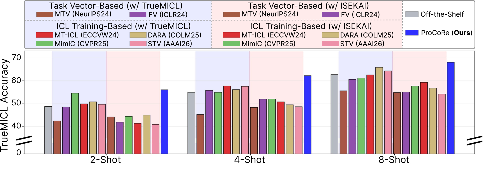
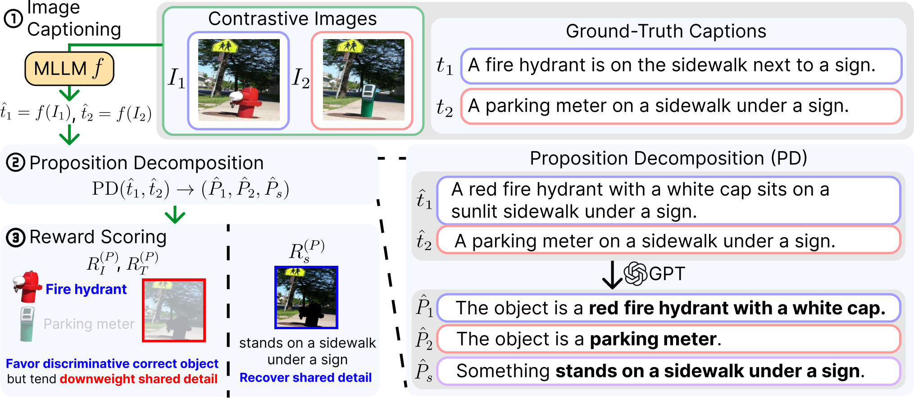
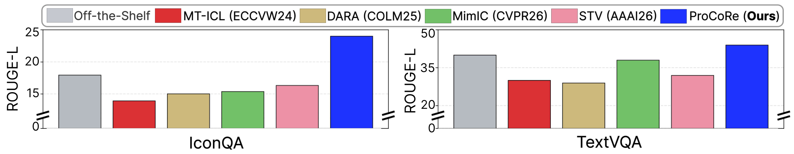
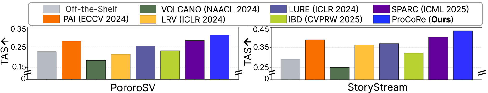

LLMs have shown strong in-context learning (ICL) capability, but extending it to Multimodal LLMs (MLLMs) remains challenging. Prior multimodal ICL methods often rely on ICL-specific datasets for additional training or task vector extraction, which can improve performance on the same ICL benchmark used for adaptation. However, they do not generalize well to other benchmarks and often induce forgetting in previously well-solved tasks.
For this reason, we identify visual grounding as the key bottleneck in multimodal ICL: MLLMs often fail to attend to task-relevant visual evidence in demonstrations, instead over-relying on textual cues and producing hallucinated outputs. To address this, we propose ProCoRe to enhance visual grounding through contrastive reinforcement learning on multimodal contrastive data. ProCoRe generates captions for contrastive image pairs, decomposes them into propositions, and optimizes contrastive rewards that encourage alignment with corresponding images while discouraging mismatched ones.
Despite never seeing ICL-formatted training examples, ProCoRe improves average multimodal ICL classification accuracy by 5.6% and captioning ROUGE-L by 13.8% over the off-the-shelf Qwen-VL-3-8B model, outperforming ICL-data-dependent state of the arts across benchmarks. Finally, we introduce PICL, a personalized multimodal ICL captioning benchmark that tests whether MLLMs genuinely understand visual demonstrations rather than relying on pre-trained semantic priors.
Methods that adapt to an ICL benchmark do well on that benchmark, and poorly on the next one.

Pick demonstrations similar to the query. Sensitive to prompt design and sample order, and often no better than random selection.
Strong on the benchmark used for adaptation, weak on others, and prone to forgetting previously solved tasks such as simple VQA.
Train visual grounding on contrastive image pairs. ICL improves as a consequence, across benchmarks.
ICL data-dependent methods fit their training benchmark. On a different ICL benchmark they often fall below the off-the-shelf model, and ICL training degrades general VQA.
MLLMs attend to irrelevant regions instead of the task-relevant evidence, which leads to hallucination. The failure is sharpest for personalized identifiers that pre-training never covered.
A caption that misses fine detail fits both images of a contrastive pair, so it earns a low reward. Optimizing the reward pushes the model to describe what is actually in each image.

The MLLM captions two images that differ only in fine-grained content such as object identity or attributes (InpaintCOCO, EQBEN).
GPT-4o-mini splits the two captions into propositions unique to image 1, unique to image 2, and shared by both.
Each proposition group gets its own reward, and the MLLM is optimized with Group Relative Policy Optimization (GRPO).
Each image-specific proposition should match its own image more than the other one, measured by CLIP similarity.
Each image-specific proposition should be entailed by its own ground-truth caption and not by the other, measured by an NLI entailment score.
Shared propositions should be supported by both images and both ground-truth captions, which keeps common scene details in the caption.
All main comparisons use Qwen-VL-3-8B. For more models, model sizes, and benchmarks, see the paper.
| Method | ICL train data | TrueMICL (shots) | ISEKAI (shots) | ||||||||
|---|---|---|---|---|---|---|---|---|---|---|---|
| 0 | 1 | 2 | 4 | 8 | 0 | 2 | 4 | 8 | 12 | ||
| Off-the-shelf | – | 27.11 | 44.79 | 48.83 | 55.03 | 62.70 | 0.16 | 37.98 | 83.68 | 93.79 | 96.42 |
| RICES retrieval | – | 27.11 | 44.79 | 47.16 | 51.83 | 61.86 | 0.16 | 36.31 | 81.21 | 90.53 | 92.36 |
| FV task vector | TrueMICL | 28.82 | 43.88 | 48.61 | 55.87 | 60.65 | 0.96 | 31.58 | 78.78 | 93.19 | 97.92 |
| FV task vector | ISEKAI | 26.44 | 38.76 | 41.98 | 52.02 | 55.18 | 1.21 | 35.44 | 84.72 | 92.18 | 97.03 |
| MimIC ICL training | TrueMICL | 27.08 | 48.62 | 54.65 | 55.00 | 61.21 | 3.02 | 34.86 | 81.03 | 85.51 | 92.19 |
| MimIC ICL training | ISEKAI | 27.08 | 38.74 | 43.55 | 51.12 | 56.76 | 0.16 | 44.87 | 83.02 | 94.74 | 94.11 |
| VOLCANO hallucination | – | 31.41 | 47.76 | 50.68 | 57.43 | 64.12 | 0.21 | 42.08 | 74.96 | 94.73 | 92.11 |
| ProCoRe (Ours) | none | 33.02 | 51.47 | 56.11 | 62.26 | 68.08 | 3.94 | 50.72 | 86.23 | 96.18 | 98.41 |
Multimodal ICL classification (accuracy), selected rows from Table 2 of the paper: one representative method per baseline category. For methods trained on ICL data, both training datasets are shown. Bold marks the best score in each column.
Better ICL comes with stronger grounding and no forgetting.


The gain comes from the reward, and the proposition-level reward beats the sentence-level one.
| Method | MS COCO (shots) | PICL (shots) | ||||||||
|---|---|---|---|---|---|---|---|---|---|---|
| 0 | 1 | 2 | 4 | 8 | 0 | 1 | 2 | 3 | 4 | |
| Off-the-shelf | 15.53 | 19.02 | 21.21 | 23.52 | 25.65 | 24.50 | 25.40 | 24.78 | 28.30 | 29.29 |
| SFT on contrastive pairs | 19.48 | 27.92 | 30.11 | 26.84 | 37.62 | 22.13 | 27.88 | 23.41 | 30.74 | 26.81 |
| Sentence-level contrastive reward | 36.02 | 45.73 | 43.21 | 44.11 | 42.58 | 32.88 | 34.74 | 31.92 | 34.02 | 33.41 |
| ProCoRe (Ours) | 39.12 | 46.88 | 46.41 | 46.26 | 46.03 | 33.54 | 36.11 | 35.89 | 36.71 | 36.76 |
Captioning ROUGE-L (Table 3 of the paper). Supervised fine-tuning on the same contrastive pairs gives only marginal gains.
@inproceedings{seo2026visual,
title = {Visual Grounding First, Multimodal In-context Learning Follows},
author = {Seo, Minhyuk and Lee, Minjae and Lee, Chaeeun and Lin, Wei and Mirza, Muhammad Jehanzeb and Tuytelaars, Tinne and Choi, Jonghyun},
booktitle = {NeurIPS},
year = {2026},
}